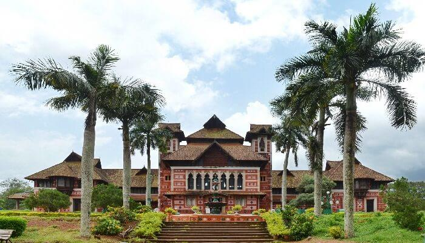
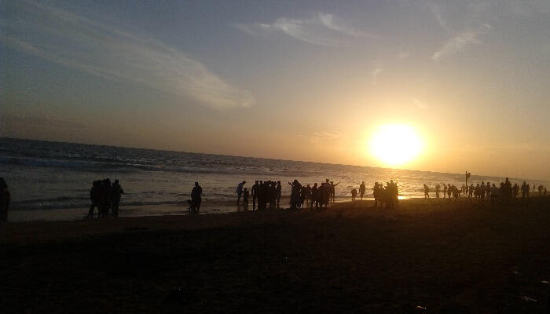
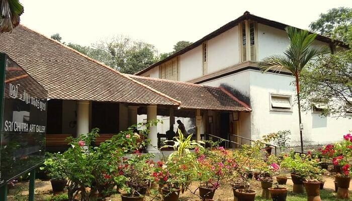

Thiruvananthapuram or Trivandrum as the city is popularly known for its riveting natural beauty and stunning architectural marvels. The city is popular for its rich cultural and religious heritage. You’ll find some really amazing places to visit in Trivandrum that will not only make your trip worthwhile but will also give you a fair idea about the enthralling cultural structure of the city. Trivandrum is the capital city of Kerala and is one of the largest cities in the state. The city is popular for its alluring beaches and elegant British architectural designs which can be found all over the city. The city has great vibes and is a captivating tourist attraction. While each place here is worth a visit, a number of them will undoubtedly leave you spellbound.
Napier Museum – Learn The History & Culture
Amongst the best tourist places in Trivandrum, it’s a sparkling museum which was built by a British officer named Napier in the mid of 19th century. The museum is an important art and cultural center in Trivandrum. An enthralling museum – it is the best place to learn about the extremely rich culture and historic heritage of state of Kerala. The museum houses some incredible sculptures and coins from different eras of Kerala. One of the best parts of the museum is alluring musical instruments from different parts and era of Kerala. The museum is situated in the city’s zoo. There is an entrance fee of INR 20 per individual. The surroundings around the zoo are ambrosial and very green.
Shangumugham Beach – Relax & Unwind

Shangumugham Beach is an incredible beach situated very near to the city airport. This beach of clear blue waters and white sand is a ravishing place to relax and spend your time in ethereal surroundings. The beach is extremely clean and has maintained its raw beauty. The beachfront is quite large and one of the best places to see in Trivandrum The beach also houses a little Devi temple. Sunset views are just matchless and very adorable from the beach. The tranquil beach is quite long and very charismatic. The best part of this beach is it isn’t as crowded as other popular beaches in the city – except perhaps during the sunset time when a number of people visit to view the enchanting sunset scenes here.
Sree Chitra Art Gallery – Relish The Art

The art gallery is quite old and was opened by the Maharaja of Travancore Sri Chitra Thirunal in the year 19345 and certainly one of the best Trivandrum tourist places to visit. This is a delightful place to visit and houses some very exquisite artworks related to Travancore kingdom and Kerala. You will find some incredible collections of paintings, many of which have been painted by the family members of the royal Travancore family. The museum also showcases the contemporary art exhibits from Japan, China, Tibet, Indonesian etc art centers.